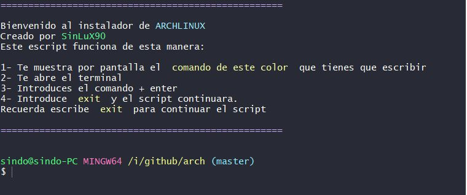
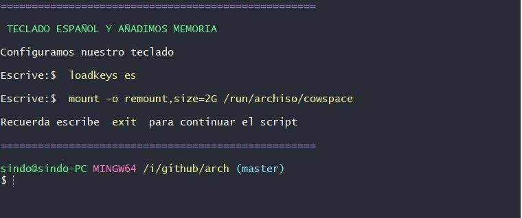
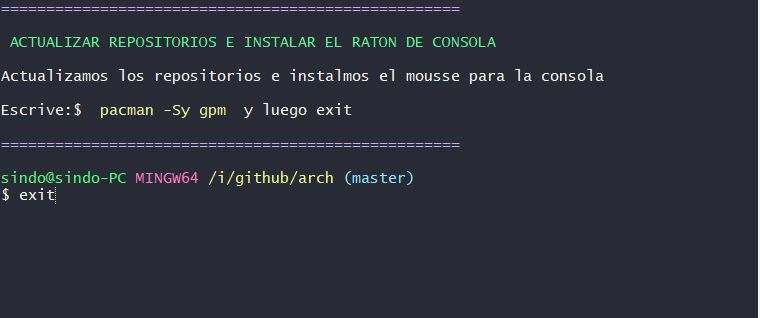

Manual para instalar Arch Linux
Bienvenidos a este tutorial.
En este script que he creado ara más fácil la instalación de Arch Linux
Con él se pueden ver los comandos que necesitas para la instalación y vosotros
mismos los iréis poniendo.
De esta manera iréis aprendiendo más fácil.
Podéis cambiar los comandos, por otros que vosotros utilicéis.
Al finalizar cada comando hay que poner exit para continuar con el
script.
Guía de utilización
Nos descargamos la ISO desde la página oficial https://www.archlinux.org/download/
O directamente desde aquí: http://ftp.rediris.es/mirror/archlinux/iso/2021.01.01/archlinux-2021.01.01-x86_64.iso
Cargamos la iso en nuestro PC o M. Virtual, una vez iniciado el sistema nos descargamos el git del repositorio:
empecemos!
Preparar el sistema para lanzar el script
Para empezar ponemos el teclado en español:
$ loadkeys es
Actualizamos con 'Sy' y descargamos git:
$ pacman -Sy git
Terminado nos bajamos el repositorio de este enlace:
$ git clone https://github.com/GumerLuX/arch.git
Para que el proceso de instalación no tenga problemas de espacio, creamos un espacio virtual.
Añadimos mas espacio a la memoria, con este comando:
$ mount -o remount,size=2G /run/archiso/cowspace
Lanzamos el script
Terminada la descarga y añadido el espacio virtual entramos en el directorio, comprobamos los permisos, le damos permisos de ejecución y lanzamos el script.
$ cd arch
$ ls -> nos muestra los archivos
install.sh disco.sh kernel.sh root.sh usuario.sh README.md ......
$ chmod +x *.sh
$ ls
Nos encontramos con cinco scripts a utilizar en este orden
1º install.sh -> Es un script de instalación Arch Linux. Dentro se utilizan el script de configuración del disco e instal·lació del sistema base y kernel linux
- Aº disco.sh -> Configuración del disco y particiones
- Bº kernel.sh -> Instalación del Sistema Base y Kernel Linux
2º root.sh -> Configuración de Red y controladores gráficos.
3º usuario.sh -> Configuración de usuario y Escritorio gráfico.
Nota
Dentro de la instalación, al poner el segundo script el de disco.sh hay que poner dos veces exit para volver al script principal.
El primer exit sale del script disco.sh
El segundo exit continua el primer script
Paso lo mismo al lanzar el script de kernel.sh
Iniciamos el script
$ ./install.sh
Terminado el primer script, reiniciamos el sistema y entramos como root.
$ root -> introducimos la contraseña de root
Y lanzamos el segundo script
$ ls -> Comprobamos el directorio
$ cd arch -> Entramos en el, y lanzamos el script
$ ./root.sh
Al finalizar entramos como usuario y lanzamos el tercer script
$ exit -> para salir de root.
$ usuario -> introducimos la contraseña de usuario
$ ls -> Comprobamos el directorio
$ cd arch -> Entramos en el, y lanzamos el script
$ ./usuario.sh
El script se utiliza muy fácil:
El color amarillo que veis indica el comando a introducir en el bash:
Una vez introducido + Enter para ejecutar
$ Se realiza el comando
En la próxima línea del bash$ tenéis que poner exit
$ exit -> para continuar con el script
Aqui teneis unas imajenes:



Recordar, cuando configuremos el disco e instalemos el kernel de linux, lanzaremos el orto script dentro del primero.
Para salir de estos script hay que poner dos veces exit. Así hasta el final, ya veréis que en poco tiempo tenis Arch Linux instalado.
No os dará tiempo para tomar
Cualquier duda podéis mandar un email: GumerLuX90@gmail.com
Que mejor que con un video
Este video esta en construcción, pero podéis visualizar este de momento, le falta el sonido